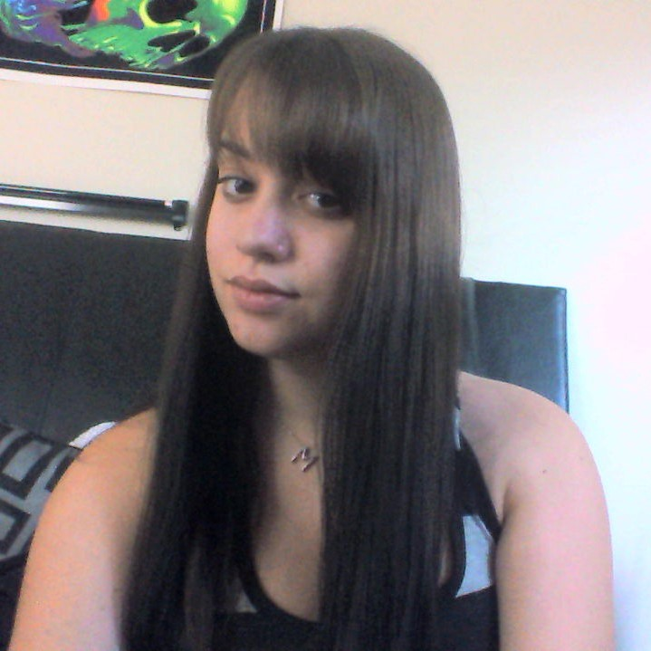
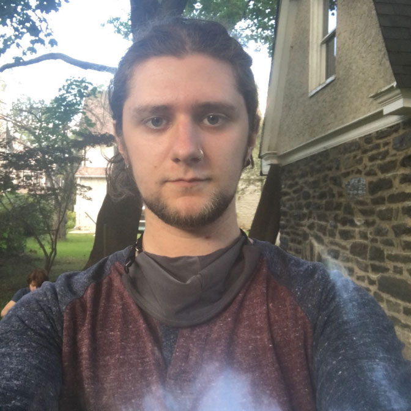

Case Study: Off the Edge Coloring
Meet the Blue Team
-
Ben Schenerman
Role: Developer
Fun Fact: I can catch flies with my bare hands.
-

Devin Taylor
Role: Project Manager/Developer/UI Designer
Fun Fact: I have two golden retrievers.
-
John Eberly
Role: Developer
Fun Fact: I don't have a driver's license.
-

Mikayla Lisiy
Role: UX/UI Designer
Fun Fact: I like watching alien conspiracy documentaries.
-

Wynn O'Donnell
Role: Developer/UI Designer
Fun Fact: I drove across the country from Seattle to Philadelphia.
Problem Statment
Our team's goal was to develop and design a coloring book website unique from any average coloring book website. The problem with most coloring book websites out there is that there is a lack of accessibility of tools. Using task runners and scripts our team created a way for users to be able to color in their desired coloring page by selecting the color of their choice using either of the available color swatches or by using our color picker which gives the user a variety of color options. We've also included features such as allowing the user to go back or foward a step in their coloring process.
Solution
Style
In the first phase of this project, a few of our team members created styletiles and compared them to decide on the branding of our coloring book website. Each of our styletiles included a theme, color palette, logo, and font variations.
In our finalized styletile, we decided we wanted to go for a more alternative look for our coloring book website. With team collaboration, we mixed some of our ideas together and came up with "Off the Edge Coloring".
Final Results
Looking at our project overall, we made progress as a team to finalize our coloring book website. From building and installing task runners, scripts, refining svgs, taking in user feedback, and working as a team to refine our website to give users the best experience with coloring.